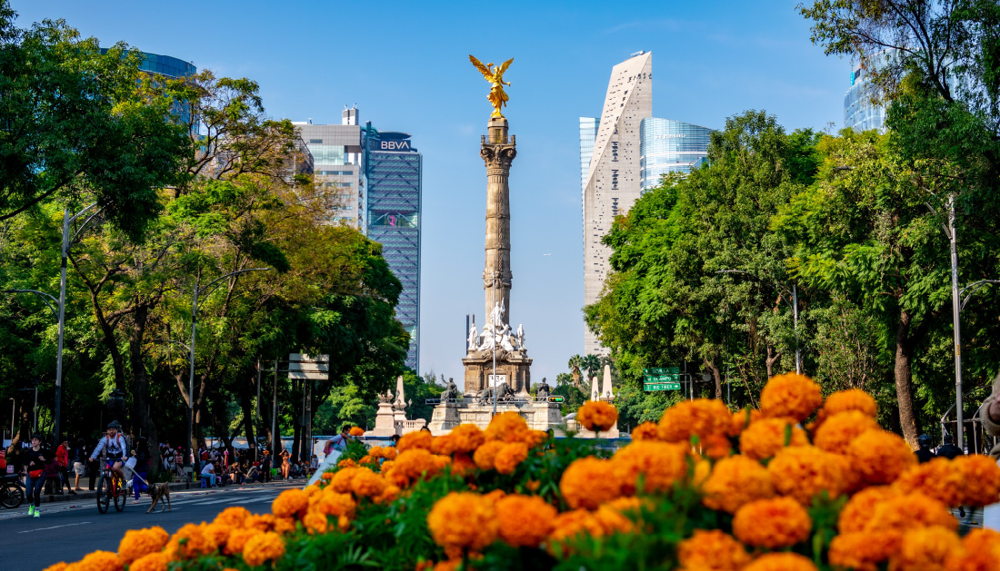
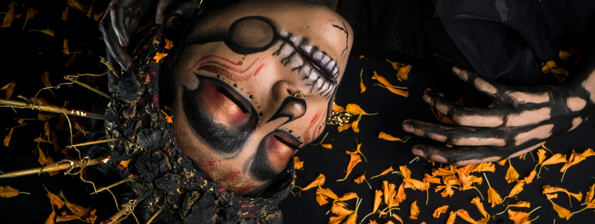
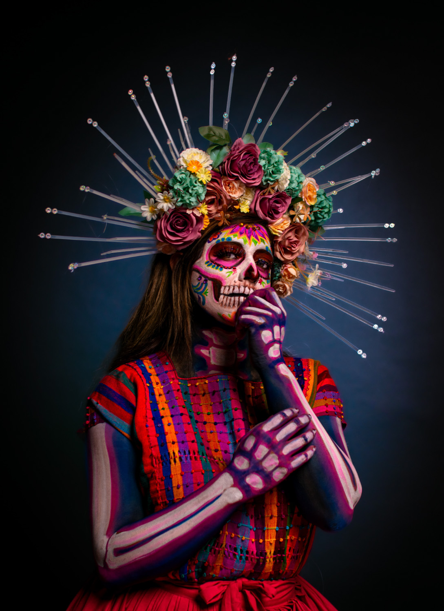

En la época prehispánica el culto a la muerte era uno de los elementos básicos de la cultura, cuando alguien moría era enterrado envuelto en un petate y sus familiares organizaban una fiesta con el fin de guiarlo en su recorrido al Mictlán. De igual forma le colocaban comida que le agradaba en vida, con la creencia de que podría llegar a sentir hambre.
El Día de Muertos en la visión indígena implica el retorno transitorio de las ánimas de los difuntos, quienes regresan a casa, al mundo de los vivos, para convivir con los familiares y para nutrirse de la esencia del alimento que se les ofrece en los altares puestos en su honor.
En esta celebración de Día de Muertos, la muerte no representa una ausencia sino una presencia viva; la muerte es un símbolo de la vida que se materializa en el altar ofrecido. En este sentido se trata de una celebración que conlleva una gran trascendencia popular ya que comprende diversos significados, desde filosóficos hasta materiales.

Su origen se ubica en la armonía entre la celebración de los rituales religiosos católicos traídos por los españoles y la conmemoración del día de muertos que los indígenas realizaban desde los tiempos prehispánicos; los antiguos mexicas, mixtecas, texcocanos, zapotecas, tlaxcaltecas, totonacas y otros pueblos originarios de nuestro país, trasladaron la veneración de sus muertos al calendario cristiano, la cual coincidía con el final del ciclo agrícola del maíz, principal cultivo alimentario del país.
La celebración del Día de Muertos se lleva a cabo los días 1 y 2 de noviembre ya que esta se divide en categorías: De acuerdo con el calendario católico, el 1 de noviembre corresponde a Todos los Santos, día dedicado a los “muertos chiquitos” o niños, y el día 2 de noviembre a los Fieles Difuntos, es decir, a los adultos.
Cada año muchas familias colocan ofrendas y altares decorados con flores de cempasúchil, papel picado, calaveritas de azúcar, pan de muerto, mole o algún platillo que le gustaba a sus familiares a quien va dedicada la ofrenda, y al igual que en tiempos prehispánicos, se coloca incienso para aromatizar el lugar.
Asimismo, las festividades incluyen adornar las tumbas con flores y muchas veces hacer altares sobre las lápidas, lo que en épocas indígenas tenía un gran significado porque se pensaba que ayudaba a conducir a las ánimas a transitar por un buen camino tras la muerte.

La tradición también indica que, para facilitar el retorno de las almas a la tierra, se deben esparcir pétalos de flores de cempasúchil y colocar velas trazando el camino que van a recorrer para que estas almas no se pierdan y lleguen a su destino. En la antigüedad este camino llegaba desde la casa de las familias hasta el panteón donde descansaban sus seres queridos.
El Día de Muertos se celebra en todo México, teniendo algunas variantes dependiendo la región o el estado.
Oaxaca, uno de los estados más ricos culturalmente hablando, la celebración de Día de Muertos es una de las más significativas. Los altares se adornan con un mantel blanco o papel picado y se divide en escalones, teniendo cada uno un significado especial: el primero representa a los abuelos y/o adultos, mientras que el segundo o sucesivos son para todos los demás. Durante esta festividad puede asistirse a infinidad de exhibiciones en Oaxaca.
Otros estados y lugares destacados en México durante esta festividad son: Janitzio y Pátzcuaro en Michoacán, Xochimilco en la Ciudad de México y Cuetzalán en Puebla, por citar algunos.

Para la UNESCO, el encuentro anual entre los pueblos indígenas y sus ancestros cumple una función social considerable al afirmar el papel del individuo dentro de la sociedad. También contribuye a reforzar el estatuto cultural y social de las comunidades indígenas de México.
El Día de Muertos se considera una celebración a la memoria y un ritual que privilegia el recuerdo sobre el olvido.
En México la celebración del Día de Muertos varía de estado en estado, de municipio en municipio y de pueblo en pueblo, sin embargo en todo el país tiene un mismo principio, reunir a las familias para dar la bienvenida a sus seres queridos que vuelven del más allá.
Credits:
Home Banner:Samuel Benjamin Hernandez Lopez Catrina
Home NewsFernando Paleta
Angel Independencia: Oscar Dominguez
Mexico City: Fran Dany
Portrait: Christian Gutierrez Nava
Catrina Banner: Luis Becerra
@pexels.com, DescubreMexico.com